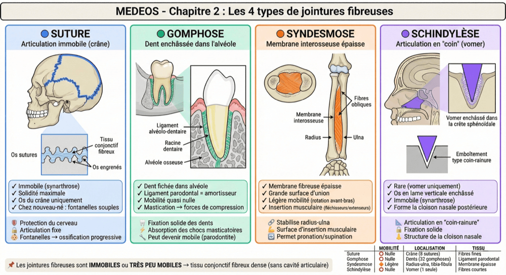
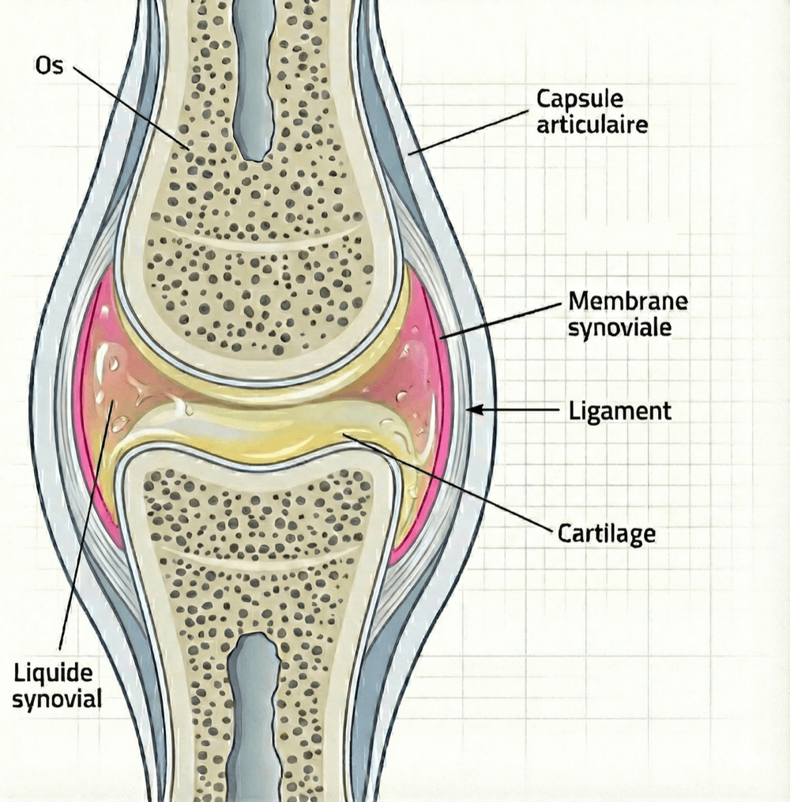
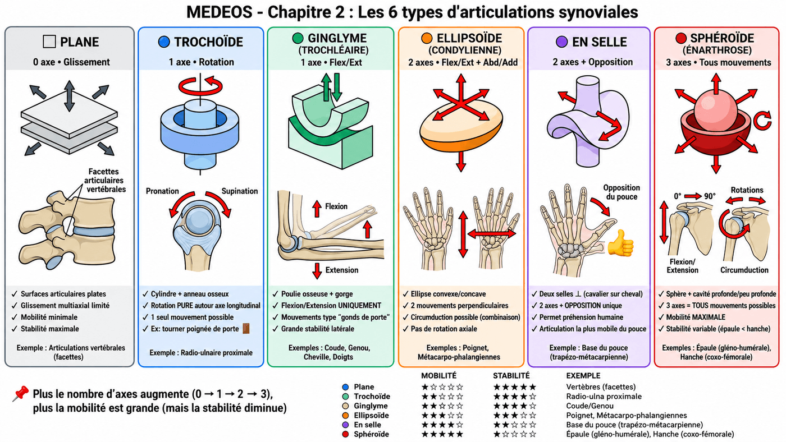

Les 3 familles d'articulations
Environ 350 jointures, et une seule loi pour les comprendre.
Plus une articulation est mobile, moins elle est stable.
Os, muscle, cartilage, tendon, ligament : tu as maintenant tous les tissus en main. Voici l'endroit où ils se rencontrent tous. Une articulation (ou jointure) est une zone de contact entre deux os. Le squelette en compte environ 350, du crâne parfaitement immobile jusqu'à l'épaule qui tourne dans toutes les directions. Une seule loi fondamentale les gouverne : plus une articulation est mobile, moins elle est stable — et inversement. L'épaule, très mobile, se luxe facilement ; la hanche, moins mobile, est beaucoup plus stable. De là viennent les 3 grandes catégories classées selon la mobilité : fibreuses (immobiles), cartilagineuses (semi-mobiles), synoviales (très mobiles).
Première famille, la plus solide : les jointures fibreuses. Ici, les deux os sont reliés directement par du tissu conjonctif fibreux dense, et il n'y a aucune cavité articulaire entre eux — aucun espace, donc aucun jeu : la mobilité est nulle ou quasi nulle. Elles se déclinent en 4 types, qui se distinguent par la forme du contact entre les os.
- 1 La suture. Des bords osseux dentelés, qui s'engrènent l'un dans l'autre, séparés par un tissu fibreux mince (0,5 à 1 mm). Localisation : le crâne (sutures coronale, sagittale, lambdoïde). Rôle : la protection du cerveau.
- 2 La gomphose. Une racine de dent enchâssée dans son alvéole, maintenue par le ligament parodontal. Localisation : les 32 dents du maxillaire et de la mandibule. Rôle : une fixation assez solide pour encaisser la mastication.
- 3 La syndesmose. Une membrane interosseuse fibreuse épaisse tendue entre deux os parallèles : radius-ulna à l'avant-bras, tibia-fibula à la jambe. Rôle : stabilité et surface d'insertion musculaire. C'est la seule de la famille à autoriser une légère mobilité (la rotation de l'avant-bras en pronation/supination).
- 4 La schindylèse. Une crête osseuse, en forme de coin, enchâssée dans une rainure. Localisation : le vomer et le sphénoïde. Rôle : la structure de la cloison nasale.

Deuxième famille, le compromis : les jointures cartilagineuses. Cette fois, ce n'est plus du tissu fibreux mais du cartilage qui relie les deux os — le cartilage hyalin ou le cartilage fibreux de la fiche précédente. Résultat : la mobilité reste limitée, mais les chocs sont absorbés. Il n'en existe que 2 types, et deux critères suffisent à les séparer : le type de cartilage employé et leur durée de vie.
- 1 La synchondrose : cartilage hyalin, temporaire. Elle utilise le cartilage hyalin et elle est temporaire : elle ossifie avec l'âge, c'est-à-dire que le cartilage se transforme en os et que la jointure disparaît. Localisation : le cartilage de croissance de la métaphyse (la zone où l'os s'allonge), ou encore la synchondrose sphéno-occipitale (entre deux os du crâne). Rôle : la croissance de l'os en longueur.
- 2 La symphyse : cartilage fibreux, permanente. Elle utilise le cartilage fibreux et elle est permanente — elle persiste toute la vie. Localisation : les disques intervertébraux de la colonne et la symphyse pubienne du bassin. Rôle : amortir les chocs et autoriser de légers mouvements.
Troisième et dernière famille : les jointures synoviales, les plus complexes et les plus mobiles du corps humain. Elles représentent à elles seules environ 80 % des articulations : genou, épaule, coude, hanche, poignet, cheville. Leur mobilité a un prix — il faut toute une machinerie en six pièces pour la rendre possible sans que l'articulation se détruise.
- 1 Les surfaces articulaires. Les extrémités osseuses recouvertes de cartilage hyalin (2 à 4 mm). Rôle : réduire les frottements et absorber les chocs.
- 2 La cavité articulaire. L'espace situé entre les deux os. On le dit virtuel parce qu'au repos il est quasi inexistant : les deux surfaces sont plaquées l'une contre l'autre, maintenues par une pression négative (la pression y est plus basse qu'à l'extérieur, comme dans une ventouse). Rôle : permettre le mouvement libre des surfaces articulaires.
- 3 La capsule articulaire. Un manchon fibreux à 2 couches : une membrane fibreuse externe (solide) et une membrane synoviale interne (qui sécrète le liquide). Rôle : enfermer l'articulation et produire le liquide synovial.
- 4 Le liquide synovial. Un liquide visqueux et transparent, d'aspect « blanc d'œuf » (eau + acide hyaluronique + protéines). Il est viscoélastique : fluide au repos, il permet le mouvement ; visqueux sous pression, il protège le cartilage. Rôle : lubrifier les surfaces et nourrir le cartilage par diffusion — souviens-toi que le cartilage n'a ni vaisseaux ni nerfs.
- 5 Les ligaments. Des bandes fibreuses épaisses — ce sont exactement les trois catégories de la fiche précédente : capsulaires, extra-capsulaires ou intra-capsulaires. Rôle : limiter l'amplitude, orienter les mouvements et stabiliser l'articulation.
- 6 Les structures accessoires. Le labrum (un anneau), les ménisques (des croissants), les disques (qui divisent la cavité). Rôle : améliorer la congruence des surfaces (la façon dont les deux os s'emboîtent : mieux ils épousent leurs formes, mieux l'articulation tient) et amortir les chocs.

Dernière étape : toutes les synoviales ne bougent pas de la même manière. C'est la forme des surfaces articulaires qui détermine le nombre d'axes de mouvement possibles — et donc les six types ci-dessous. Tu retrouves ici les 3 axes de mouvement des toutes premières fiches — transversal, sagittal, vertical : c'est exactement là qu'ils servent.
- 1 Plane — 0 axe. Des surfaces plates qui autorisent un simple glissement léger, dans plusieurs directions. Exemple : les articulations vertébrales (les facettes).
- 2 Trochoïde (pivot) — 1 axe longitudinal. Un cylindre dans un anneau : rotation uniquement. Exemple : la radio-ulnaire proximale (pronation/supination). Moyen mnémotechnique : Trochoïde = Tourniquet.
- 3 Ginglyme (trochléaire) — 1 axe transversal. Une poulie dans une gorge : flexion/extension uniquement. Exemples : le coude, le genou, la cheville, les interphalangiennes. Moyen mnémotechnique : Ginglyme = Gonds de porte.
- 4 Ellipsoïde (condylienne) — 2 axes. Une ellipse convexe dans une ellipse concave : flexion/extension + abduction/adduction. Exemples : le poignet (radio-carpienne) et les métacarpo-phalangiennes.
- 5 En selle (trochléenne) — 2 axes. Deux selles perpendiculaires emboîtées : flexion/extension + abduction/adduction, et en plus l'opposition (le pouce va toucher les autres doigts). Exemple : la base du pouce (trapézo-métacarpienne). Moyen mnémotechnique : En selle = un cavalier sur son cheval.
- 6 Sphéroïde (énarthrose) — 3 axes. Une tête sphérique dans une cavité : tous les mouvements sont possibles, plus la circumduction. Exemples : l'épaule (gléno-humérale) et la hanche (coxo-fémorale).

Deux sphéroïdes, deux résultats opposés : c'est là que la loi du début se vérifie le mieux. L'épaule a une cavité peu profonde (la glénoïde, presque plate) → elle est très mobile (180° d'amplitude) mais instable, et sa luxation est fréquente. La hanche a une cavité profonde (l'acétabulum) → elle est moins mobile (120°) mais très stable, et sa luxation est rare. Même type d'articulation, même forme générale : c'est la profondeur de la cavité qui fait toute la différence.
Le chapitre des tissus s'arrête ici : tu as les quatre tissus du système locomoteur — os, muscle, cartilage, articulations. C'est ta boîte à outils, et chaque région que tu étudieras ensuite sera faite de ces mêmes tissus. La première d'entre elles arrive juste après : le rachis, la colonne vertébrale — où tu retrouveras d'un coup les symphyses, les articulations planes et les disques de cartilage fibreux.